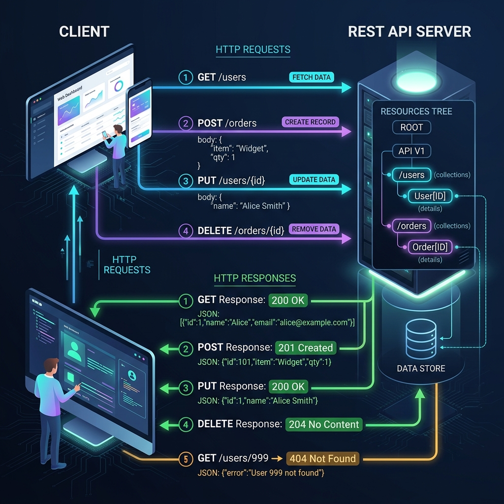
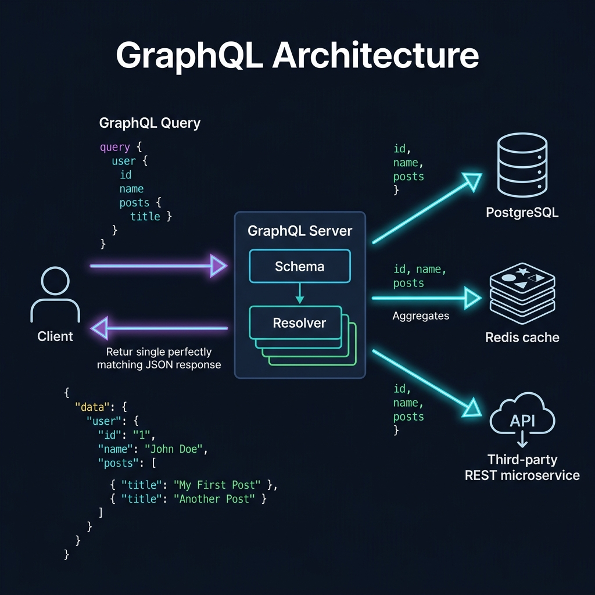
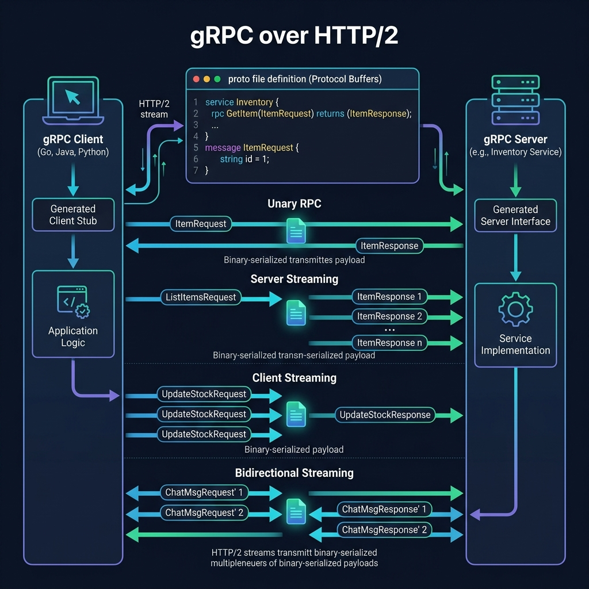
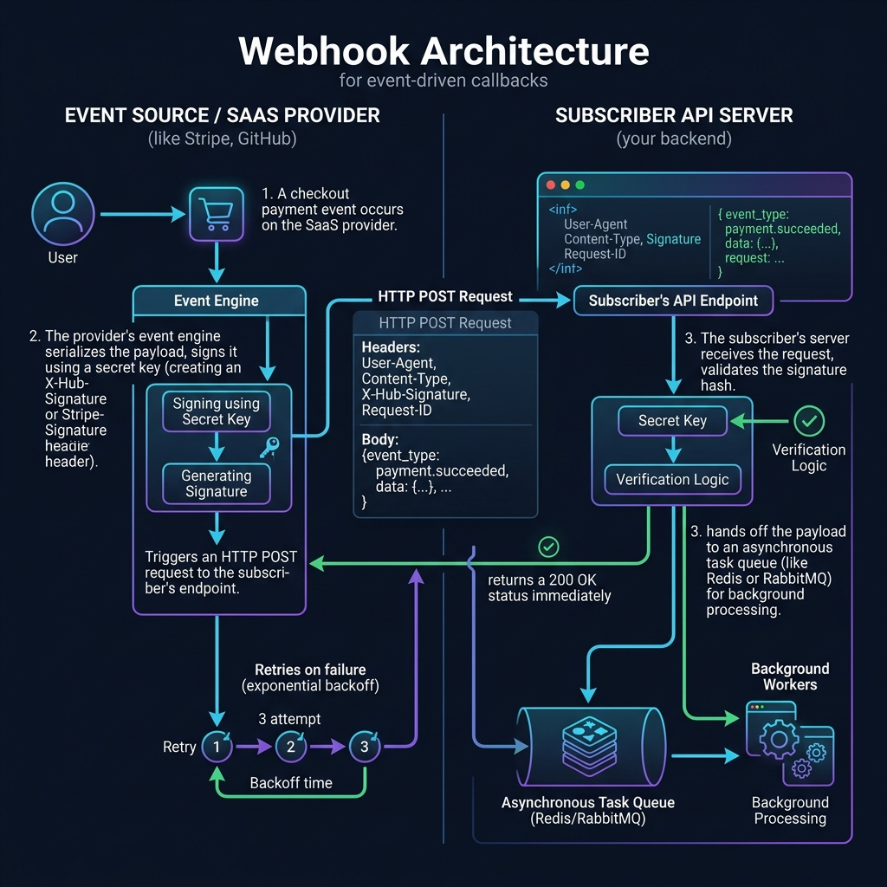
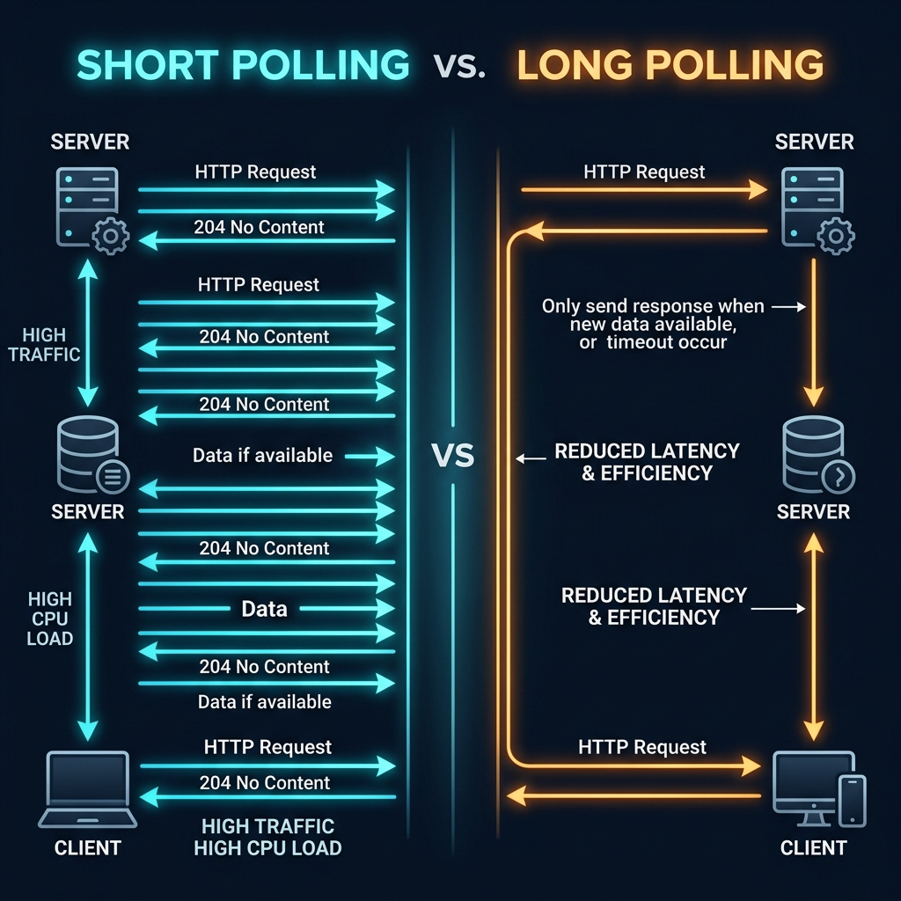

REST (Representational State Transfer) là một phong cách kiến trúc phần mềm được Roy Fielding mô tả trong luận văn tiến sĩ năm 2000. REST không phải là giao thức hay chuẩn — đó là một tập hợp các ràng buộc thiết kế (architectural constraints) cho hệ thống phân tán, đặc biệt là Web.
Ý tưởng cốt lõi: mọi thứ trong hệ thống đều là Resource (tài nguyên) — user, order, product, image... Mỗi resource có một URI định danh duy nhất. Client và server giao tiếp qua HTTP bằng cách thao tác lên resource đó.
6 Ràng buộc của REST (REST Constraints)
Phân tách rõ client (UI) và server (data/logic). Client không quan tâm server lưu trữ data thế nào. Server không quan tâm client hiển thị thế nào. → Tăng khả năng scale độc lập.
Mỗi request phải chứa đủ thông tin để server xử lý. Server không lưu session state giữa các request. → Mỗi request là độc lập hoàn toàn.
Response phải đánh dấu rõ có thể cache hay không (Cache-Control headers). Client có thể tái sử dụng response đã cache. → Giảm tải server, tăng tốc độ.
Giao diện thống nhất: resource identification qua URI, manipulation qua representations, self-descriptive messages, HATEOAS. → Đơn giản hóa kiến trúc tổng thể.
Client không biết mình đang kết nối trực tiếp server hay qua proxy, load balancer, CDN. Hệ thống có thể thêm layer trung gian. → Tăng khả năng mở rộng và bảo mật.
Server có thể gửi code thực thi về client (JavaScript). Đây là ràng buộc duy nhất không bắt buộc. → Mở rộng chức năng client linh hoạt.
HTTP Methods — Bảng tổng quan
| Method | Mục đích | Idempotent? | Safe? | Request Body | Status Code phổ biến |
|---|---|---|---|---|---|
GET | Lấy resource | ✅ Có | ✅ Có | Không | 200, 404, 304 |
POST | Tạo resource mới | ❌ Không | ❌ Không | Có | 201, 400, 409, 422 |
PUT | Thay thế toàn bộ resource | ✅ Có | ❌ Không | Có | 200, 204, 404 |
PATCH | Cập nhật một phần resource | ⚠️ Tùy | ❌ Không | Có | 200, 204, 422 |
DELETE | Xóa resource | ✅ Có | ❌ Không | Không | 204, 404 |
HEAD | Như GET nhưng chỉ lấy headers | ✅ Có | ✅ Có | Không | 200, 404 |
OPTIONS | Hỏi server hỗ trợ method nào | ✅ Có | ✅ Có | Không | 200, 204 |
Ví dụ thực tiễn
Bạn cần xây dựng backend cho ứng dụng quản lý thư viện. Hệ thống có các thực thể: Books, Authors, Categories, BorrowRecords. Frontend team cần một API rõ ràng để tích hợp. Vấn đề: làm thế nào đặt tên endpoint chuẩn, dùng đúng HTTP method, và trả về status code phù hợp?
Nguyên tắc đặt tên resource trong REST: dùng danh từ số nhiều, không dùng động từ trong URL. Hành động được thể hiện qua HTTP method.
GET /getBooks
POST /createBook
DELETE /deleteBook/123
# ✅ Đúng — RESTful URL Design
GET /books → Lấy danh sách sách
POST /books → Tạo sách mới
GET /books/{id} → Lấy thông tin sách cụ thể
PUT /books/{id} → Thay thế toàn bộ thông tin sách
PATCH /books/{id} → Cập nhật một phần (vd: chỉ sửa giá)
DELETE /books/{id} → Xóa sách
# Nested resources — quan hệ cha-con
GET /books/{id}/authors → Tác giả của sách
GET /authors/{id}/books → Sách của tác giả
POST /books/{id}/borrow → Mượn sách (action → dùng noun)
# Query params — filtering, sorting, pagination
GET /books?category=fiction&sort=title&order=asc&page=2&limit=20
GET /books?search=harry+potter&author_id=5
Status code cần nhất quán: tạo thành công → 201 Created kèm Location header, xóa thành công → 204 No Content, không tìm thấy → 404 Not Found, lỗi validation → 422 Unprocessable Entity.

Nguyên tắc vàng của REST URL: URL định danh tài nguyên, HTTP method định danh hành động. Không bao giờ viết động từ vào URL như /deleteUser hay /getBooks.
Khi nào dùng REST? Phù hợp cho hầu hết public API, CRUD operations, tích hợp third-party. Hạn chế: Over-fetching/Under-fetching (nhận thừa hoặc thiếu dữ liệu), nhiều round-trip cho data phức tạp → xem xét GraphQL.
Một API lớn có nhiều team phát triển. Mỗi team trả về lỗi theo cách riêng — team A dùng {"error":"..."}, team B dùng {"message":"...","code":...}, team C dùng {"errors":[]}. Client khó parse thống nhất, tốn công xử lý từng case. Cần một chuẩn error response chung.
RFC 7807 định nghĩa cấu trúc JSON chuẩn cho lỗi HTTP API. Bao gồm các fields: type (URI mô tả loại lỗi), title (tóm tắt ngắn), status (HTTP status code), detail (mô tả chi tiết), instance (URI định danh lỗi cụ thể). Có thể mở rộng thêm fields tùy ý.
# Lỗi validation — 422 Unprocessable Entity
{
"type": "https://api.example.com/errors/validation-error",
"title": "Validation Failed",
"status": 422,
"detail": "Một hoặc nhiều trường không hợp lệ",
"instance": "/books/create/request-id-abc123",
"errors": [
{ "field": "title", "message": "Tiêu đề không được để trống" },
{ "field": "isbn", "message": "ISBN không hợp lệ", "value": "123" }
]
}
# Lỗi không tìm thấy — 404 Not Found
{
"type": "https://api.example.com/errors/not-found",
"title": "Resource Not Found",
"status": 404,
"detail": "Sách với ID 999 không tồn tại",
"instance": "/books/999"
}
200 OK — Thành công thông thường201 Created — Tạo mới thành công204 No Content — Xóa/update không body206 Partial Content — Range request
400 Bad Request — Request sai cú pháp401 Unauthorized — Cần xác thực403 Forbidden — Không có quyền404 Not Found — Không tìm thấy409 Conflict — Xung đột (duplicate)422 Unprocessable — Validation fail429 Too Many Requests — Rate limit
500 Internal Server Error502 Bad Gateway — Upstream lỗi503 Service Unavailable504 Gateway Timeout
RFC 7807 không bắt buộc nhưng là best practice được nhiều tổ chức lớn áp dụng (Microsoft, Google). Quan trọng nhất: nhất quán trong toàn bộ API. Client chỉ cần xử lý một cấu trúc lỗi duy nhất. Luôn dùng Content-Type: application/problem+json để phân biệt với response thành công. Không bao giờ trả về 200 với body chứa lỗi — đây là anti-pattern phổ biến nhất.
API của bạn đang ở Richardson Maturity Level 2 (dùng đúng HTTP methods và status codes). Client hardcode URLs vào code → bất kỳ thay đổi URL nào đều phá vỡ client. Team muốn lên Level 3 — HATEOAS — để API tự mô tả quy trình tiếp theo, client không cần biết trước URL.
HATEOAS là viết tắt của "Hypermedia As The Engine Of Application State" — mức cao nhất trong Richardson Maturity Model. Mỗi response chứa các links mô tả những hành động có thể thực hiện tiếp theo. Client follow links thay vì hardcode URL.
{
"id": "ORD-123",
"status": "pending",
"total": 250000,
"_links": {
"self": { "href": "/orders/ORD-123" },
"confirm": { "href": "/orders/ORD-123/confirm", "method": "POST" },
"cancel": { "href": "/orders/ORD-123/cancel", "method": "POST" },
"customer": { "href": "/customers/CUST-456" },
"items": { "href": "/orders/ORD-123/items" }
}
}
# Khi status = "confirmed" → _links thay đổi
"_links": {
"self": { "href": "/orders/ORD-123" },
"ship": { "href": "/orders/ORD-123/ship", "method": "POST" }
# "cancel" và "confirm" biến mất — không còn hợp lệ
}
HATEOAS là lý tưởng nhưng ít API thực tế đạt được vì độ phức tạp cao. Phần lớn production API dừng ở Level 2 và được coi là "đủ tốt". Khi nào nên dùng HATEOAS: API public cho phép nhiều client khác nhau, hệ thống có workflow phức tạp với nhiều trạng thái. Khi nào nên dừng ở Level 2: internal API, team nhỏ, deadline gấp — HATEOAS đòi hỏi nhiều công sức thiết kế và maintain.
GraphQL là một query language cho API và một runtime để thực thi các query đó, được Facebook phát triển nội bộ từ 2012, open-source năm 2015. Thay vì nhiều endpoint như REST, GraphQL chỉ dùng một endpoint duy nhất (/graphql). Client mô tả chính xác dữ liệu cần → server trả về đúng cái đó, không thừa, không thiếu.
GraphQL giải quyết hai vấn đề lớn của REST: Over-fetching (nhận dữ liệu thừa) và Under-fetching (phải gọi nhiều API để có đủ dữ liệu cần).
3 Thao tác chính
Đọc dữ liệu (tương đương GET trong REST). Client khai báo chính xác fields cần lấy. Có thể lấy nhiều resource trong một query.
Ghi dữ liệu (tương đương POST/PUT/PATCH/DELETE). Dùng để tạo, cập nhật, xóa. Trả về dữ liệu sau khi thay đổi.
Lắng nghe dữ liệu real-time qua WebSocket. Server đẩy dữ liệu khi có event xảy ra. Phù hợp cho chat, notifications.
Màn hình profile của ứng dụng cần hiển thị: tên user, avatar, 5 bài post gần nhất (mỗi bài cần title + likes), và 3 follower nổi bật (cần tên + avatar). Với REST, cần gọi 3 API riêng biệt: GET /users/123, GET /users/123/posts?limit=5, GET /users/123/followers?limit=3. Mỗi API trả về hàng chục fields thừa (phone, address, bio, settings...) nhưng lại thiếu data nếu không gọi thêm API.
Với GraphQL, một query duy nhất lấy chính xác những gì cần. Client khai báo cấu trúc response mong muốn. Server trả về đúng cấu trúc đó.
query GetUserProfile {
user(id: "123") {
name
avatar
posts(first: 5, orderBy: CREATED_DESC) {
title
likesCount
}
followers(first: 3) {
name
avatar
}
}
}
# Response — chính xác những gì khai báo
{
"data": {
"user": {
"name": "Alice",
"avatar": "https://...",
"posts": [{ "title": "Hello", "likesCount": 42 }],
"followers": [{ "name": "Bob", "avatar": "..." }]
}
}
}

Dùng GraphQL khi: nhiều client khác nhau (web, mobile, TV) cần data shapes khác nhau; frontend team muốn tự chủ lấy data mà không phụ thuộc backend; ứng dụng có graph data phức tạp. Thận trọng: GraphQL không phải silver bullet — N+1 query problem, thiếu HTTP caching native, cần thêm tooling (DataLoader, Apollo, etc.). Với API đơn giản CRUD, REST vẫn là lựa chọn tốt hơn.
Bạn query danh sách 100 posts, mỗi post cần hiển thị thông tin tác giả. Resolver của trường author gọi DB một lần cho mỗi post → 1 query lấy posts + 100 queries lấy author = 101 queries DB. Server bị quá tải. Đây là "N+1 Problem" — bẫy phổ biến nhất trong GraphQL.
DataLoader là thư viện của Facebook giải quyết N+1 bằng hai cơ chế: Batching (gom nhiều request trong cùng một event loop tick thành một request DB) và Caching (memoize kết quả trong vòng đời một request). Kết quả: 101 queries → 2 queries.
DataLoader là bắt buộc trong mọi production GraphQL API. Không có DataLoader, N+1 sẽ giết chết hiệu năng server. Nguyên tắc: tạo DataLoader instance mới cho mỗi HTTP request (không share giữa các request để tránh cache stale data). Ngoài DataLoader, cũng cần giới hạn query depth và complexity để tránh client gửi query "tấn công" server.
gRPC là framework RPC (Remote Procedure Call) open-source của Google, ra mắt năm 2016. Nó dùng Protocol Buffers (protobuf) làm Interface Definition Language và HTTP/2 làm transport layer. Mục tiêu: giao tiếp giữa các service nhanh hơn, nhỏ hơn, type-safe hơn REST/JSON.
So sánh nhanh: REST API JSON payload 100 bytes có thể được protobuf encode thành 20-30 bytes. HTTP/2 multiplexing cho phép nhiều request trên một connection. Kết quả: latency thấp hơn 5-10x, throughput cao hơn.
4 Kiểu giao tiếp trong gRPC
Hệ thống e-commerce của bạn có 15 microservices: Order Service cần gọi Inventory Service để check hàng, Payment Service, Notification Service... Tất cả đang dùng REST/JSON. Monitoring cho thấy latency nội bộ trung bình 50-80ms/call. Khi một order gọi 5-6 service → tổng latency 300-500ms. Team muốn giảm xuống dưới 100ms tổng.
gRPC phù hợp hoàn hảo cho giao tiếp internal giữa các microservices. Workflow: Define contract trong file .proto → Generate code → Implement logic. Một file .proto là "hợp đồng" duy nhất giữa các service, type-safe hoàn toàn, không thể misuse.
syntax = "proto3";
package inventory;
service InventoryService {
# Unary: kiểm tra hàng tồn kho
rpc CheckStock(StockRequest) returns (StockResponse);
# Server streaming: theo dõi nhiều sản phẩm
rpc WatchProducts(WatchRequest) returns (stream ProductUpdate);
}
message StockRequest {
string product_id = 1;
int32 quantity = 2;
}
message StockResponse {
bool available = 1;
int32 current_stock = 2;
double unit_price = 3;
}
Sau khi define proto, chạy protoc để generate code tự động cho ngôn ngữ bạn chọn (Go, Java, Python, Node.js...). Server implement interface, client gọi như function local — type-safe, compile-time checked.

Dùng gRPC khi: microservices internal communication cần low latency, polyglot environment (nhiều ngôn ngữ), cần streaming, cần type safety cứng. Không dùng gRPC khi: public API (browser không support gRPC natively, cần gRPC-Web hoặc Envoy proxy), team không quen protobuf, cần human-readable format để debug dễ. Best practice: Giữ REST cho public API, dùng gRPC cho internal service-to-service communication.
Team đang dùng gRPC cho 8 microservices. Service A cần thêm field mới vào response, nhưng Service B, C, D đang consume service đó — họ chưa deploy phiên bản mới. Nếu không cẩn thận, thay đổi schema sẽ làm crash các service consumer. Làm sao thay đổi schema mà không breaking change?
Protobuf có quy tắc rõ ràng cho backward compatibility. Được phép: thêm field mới với field number mới, đổi field thành optional, đổi tên field (không ảnh hưởng vì protobuf dùng field number). Cấm: thay đổi field number, thay đổi field type, xóa field number (có thể reuse sau khi reserved đủ thời gian).
# Version 1
message UserResponse {
string id = 1;
string name = 2;
string email = 3;
}
# Version 2 — Thêm fields MỚI, giữ nguyên field numbers cũ
message UserResponse {
string id = 1; # giữ nguyên
string name = 2; # giữ nguyên
string email = 3; # giữ nguyên
string avatar_url = 4; # MỚI — consumer cũ ignore field này
int64 created_at = 5; # MỚI — consumer cũ ignore field này
}
# ❌ CẤM — Breaking changes
message UserResponse {
string id = 1;
int32 name = 2; # ❌ Đổi type string→int32
string phone = 3; # ❌ Field number 3 đã là email
}
✓ Đổi tên field (không đổi number)
✓ Xóa field → mark
reserved✓ Thêm enum value mới
✓ Thêm RPC method mới vào service
✗ Đổi field type
✗ Xóa và reuse field number ngay
✗ Đổi tên package
✗ Xóa RPC method đang dùng
Quy tắc vàng với protobuf: Field number là bất biến — một khi đã assign, không bao giờ thay đổi. Khi xóa field, đánh dấu reserved 5; reserved "old_field_name"; để tránh người khác vô tình reuse. Nên có buf lint và buf breaking trong CI/CD pipeline để tự động detect breaking changes trước khi merge.
Webhook là cơ chế "reverse API" — thay vì client hỏi server "có gì mới không?" (polling), server chủ động gửi HTTP POST đến URL client đã đăng ký khi có sự kiện xảy ra. Còn gọi là HTTP callback hay push notification over HTTP.
Ví dụ thực tế: GitHub gửi webhook khi có push commit; Stripe gửi webhook khi payment thành công/thất bại; Shopify gửi khi có đơn hàng mới. Người nhận webhook gọi là consumer/listener.
Bạn có ứng dụng SaaS. Sau khi user thanh toán qua Stripe, cần: kích hoạt subscription, gửi email xác nhận, cập nhật database. Vấn đề: thanh toán xử lý phía Stripe — làm sao biết khi nào payment thành công để thực hiện các bước tiếp theo? Polling Stripe API liên tục? Không scalable.
Stripe gửi webhook event đến URL bạn đăng ký. Điều quan trọng: phải verify signature để đảm bảo request thật sự từ Stripe (không phải attacker giả mạo). Stripe ký mỗi request bằng HMAC-SHA256 với secret key riêng.
Stripe-Signature: t=1614556800,v1=abc123...,v0=def456...
Content-Type: application/json
# Event body example:
{
"id": "evt_1234567890",
"type": "payment_intent.succeeded",
"data": {
"object": {
"id": "pi_abc123",
"amount": 9900,
"currency": "usd",
"metadata": { "user_id": "user_789" }
}
}
}
# Verification flow:
1. Lấy raw body (KHÔNG parse JSON trước)
2. HMAC-SHA256(secret, timestamp + "." + raw_body)
3. So sánh với v1= trong Stripe-Signature header
4. Kiểm tra timestamp < 5 phút (chống replay attack)
5. Xử lý event nếu signature hợp lệ

Checklist Webhook Production:
Idempotency: Stripe có thể gửi cùng event nhiều lần (retry). Luôn check event.id đã xử lý chưa trước khi execute business logic. Lưu processed event IDs vào Redis hoặc DB.
Regular Polling: Client gửi HTTP request định kỳ (mỗi N giây) để hỏi server "có gì mới không?". Đơn giản, dễ implement, nhưng lãng phí — phần lớn response là rỗng.
Long Polling: Client gửi request, server giữ connection mở cho đến khi có data mới hoặc timeout (thường 20-30s). Khi server phản hồi, client ngay lập tức gửi request mới. Hiệu quả hơn polling thông thường, gần real-time hơn.
Trang admin cần hiển thị danh sách đơn hàng đang xử lý, cập nhật status mỗi vài giây. Trạng thái thay đổi không liên tục (vài phút/lần). WebSocket hay SSE có vẻ overkill. Team muốn giải pháp đơn giản, dễ maintain. Polling có phù hợp không? Interval bao nhiêu là hợp lý?
Regular polling phù hợp khi: update không quá thường xuyên, độ trễ vài giây chấp nhận được, team không có infrastructure WebSocket. Adaptive polling: tăng interval khi không có thay đổi, giảm khi vừa có update. Kết hợp với ETag / If-None-Match để server trả 304 Not Modified khi không có gì mới — tiết kiệm bandwidth.
GET /orders?status=processing. Lần sau: kèm If-None-Match: "abc123" (ETag từ response trước).✓ Chấp nhận delay vài giây
✓ Simple implementation ưu tiên
✓ Browser cũ cần hỗ trợ
✓ Data cần periodic refresh dù không thay đổi
✓ Events thưa, không đoán được thời điểm
✓ Không có SSE/WebSocket infrastructure
✓ Cần pass qua proxy/CDN dễ hơn WebSocket
✓ Chat, notifications, job status
Polling interval là nghệ thuật: Quá ngắn (1s) → server overload; Quá dài (60s) → UX kém. Công thức: interval = max(3s, min(30s, last_event_age × 0.1)). Luôn implement: exponential backoff khi server lỗi, jitter để tránh thundering herd (nhiều client poll cùng lúc), max timeout cho long polling, cleanup khi user đóng tab. Chuyển sang SSE/WebSocket khi cần <500ms latency hoặc có nhiều concurrent users.
Ứng dụng project management cần hiển thị notifications real-time (ai assign task, ai comment, deadline reminder). Team không muốn setup WebSocket server phức tạp. Load balancer cũ không support WebSocket upgrade. SSE cũng bị proxy cắt sau 30s. Long Polling là giải pháp khả thi nhất trong constraint này.
Pattern chuẩn: Client gửi request kèm lastEventId — ID của event cuối cùng đã nhận. Server hold connection tới khi có event mới (ID > lastEventId) hoặc 25s timeout. Nếu timeout → server trả response rỗng với timestamp, client poll lại ngay. Đảm bảo không miss event dù reconnect.
GET /api/notifications/poll?lastEventId=1023&timeout=25
Authorization: Bearer user-token
# Response — Có event mới
HTTP/1.1 200 OK
Content-Type: application/json
{
"events": [
{ "id": 1024, "type": "task_assigned", "data": {...} },
{ "id": 1025, "type": "comment_added", "data": {...} }
],
"lastEventId": 1025
}
# Response — Timeout, không có gì mới
HTTP/1.1 204 No Content
X-Last-Event-Id: 1023

lastEventId là chìa khóa của long polling — đảm bảo không bao giờ miss event dù mạng chập chờn hay client reconnect. Server lưu events vào queue (Redis sorted set) với ID tăng dần, trả tất cả events từ lastEventId trở đi. Limitation: Mỗi long polling request chiếm 1 connection/thread server → với 10,000 concurrent users cần server mạnh. Dùng async framework (Node.js, Go, Vert.x) để xử lý hiệu quả hơn.
Server-Sent Events (SSE) là chuẩn W3C cho phép server đẩy dữ liệu liên tục đến client qua một HTTP connection duy nhất, mở một lần và giữ mãi. Khác WebSocket (bidirectional), SSE là unidirectional — chỉ server → client. Client nhận qua EventSource API.
SSE dùng text/event-stream content type, format đơn giản, tự động reconnect, hỗ trợ Last-Event-ID để resume. Phù hợp hoàn hảo cho: live feed, AI streaming response (ChatGPT style), stock ticker, log streaming.
SSE Event Format
# Full event với tất cả fields
id: 1042
event: price_update
data: {"symbol":"AAPL","price":182.50,"change":+1.2}
retry: 3000
(blank line = event separator)
# Multi-line data
id: 1043
event: ai_token
data: {"token":"Hello"}
data: {"token":", how"}
data: {"token":" can I help?"}
# Comment (heartbeat — giữ connection sống)
: ping
# Close stream
event: close
data: {"reason":"completed"}
Bạn xây dựng chatbot AI dùng OpenAI API. Khi user hỏi, AI cần vài giây để generate response. Nếu chờ toàn bộ response rồi trả về → UX tệ, user thấy loading spinner mãi. ChatGPT hiển thị từng chữ ngay khi AI generate — cảm giác "đang nghĩ". Làm sao implement streaming response như vậy?
SSE là lựa chọn hoàn hảo cho AI streaming: server nhận từng token từ OpenAI stream → ngay lập tức forward qua SSE đến browser. User thấy text xuất hiện từng chữ. Connection giữ mở cho đến khi AI hoàn thành.
new EventSource('/api/chat/stream?prompt=...') — browser tự quản lý connection, auto-reconnect khi ngắt.Content-Type: text/event-stream, Cache-Control: no-cache, X-Accel-Buffering: no (tắt Nginx buffering).source.addEventListener('token', e => appendText(e.data)). Khi nhận event: done → đóng EventSource.SSE với Nginx: Bắt buộc set proxy_buffering off và X-Accel-Buffering: no — nếu không Nginx sẽ buffer toàn bộ response rồi mới gửi, phá vỡ streaming. Heartbeat: Gửi comment : ping mỗi 15-30s để giữ connection sống qua proxy. Browser limit: Mỗi domain chỉ 6 SSE connections trên HTTP/1.1 (chia sẻ connection limit với tất cả request khác). HTTP/2 không có giới hạn này. Dùng SSE khi: chỉ cần server→client push, muốn đơn giản hơn WebSocket, cần pass qua proxy dễ dàng.
Hệ thống DevOps dashboard cần stream logs và metrics real-time từ 500 servers đến 200 concurrent users. Mỗi user subscribe nhiều server khác nhau. Vấn đề: 200 users × nhiều streams = hàng nghìn SSE connections. Server không thể hold tất cả state trong memory. Cần kiến trúc scalable với pub/sub backend.
Kiến trúc: Server agents gửi metrics/logs vào Redis Pub/Sub channels. SSE server subscribe vào các channels tương ứng với request của từng user. Khi có data → forward qua SSE. Với nhiều SSE server instances (horizontal scale), Redis làm message broker trung tâm.
Server Agent → Redis PUBLISH "metrics:server-01" → payload
Server Agent → Redis PUBLISH "logs:server-01" → log line
# SSE endpoint logic:
GET /stream?servers=server-01,server-03,server-07
→ Subscribe Redis channels: metrics:server-01, metrics:server-03...
→ Mỗi message từ Redis → format SSE event → write to response
→ On disconnect → unsubscribe Redis channels
# SSE event format:
event: metric
data: {"server":"server-01","cpu":45,"mem":72,"ts":1234567890}
event: log
data: {"server":"server-03","level":"ERROR","msg":"Connection refused","ts":...}
SSE vs WebSocket cho monitoring: SSE đủ mạnh vì chỉ cần server→client. Đơn giản hơn WebSocket, không cần upgrade protocol, hoạt động tốt qua proxy. Redis Pub/Sub giải quyết bài toán fan-out: một message từ server agent được deliver đến tất cả SSE connections đang watch server đó. Cleanup là quan trọng: khi user disconnect, unsubscribe ngay khỏi Redis để giải phóng memory. Dùng Redis connection pool, không tạo connection Redis mới cho mỗi SSE request.
OpenAPI Specification (OAS) là chuẩn mô tả REST API bằng file YAML/JSON — định nghĩa endpoints, parameters, request/response schemas, authentication, v.v. Phiên bản hiện tại là OpenAPI 3.1. Swagger là bộ công cụ (UI, editor, codegen) xây dựng xung quanh spec này — thường dùng Swagger UI để render tài liệu interactive.
Lợi ích cốt lõi: Design First — thiết kế API trước khi code, đồng bộ frontend/backend từ ngày đầu. Từ một file spec, có thể tự động generate: documentation, client SDKs (JS, Python, Go...), server stubs, mock servers, test cases.
Team backend đang build API, frontend team cần tích hợp song song. Vấn đề: backend chưa xong → frontend không thể test. Tài liệu API được viết tay trong Confluence → thường lạc hậu so với code thực tế. Cuộc họp sync liên tục tốn thời gian. Cần một cách để frontend và backend làm việc độc lập ngay từ ngày đầu.
Workflow API Design First: Cả hai team cùng thiết kế openapi.yaml trước khi code. Frontend dùng file này để tạo mock server (Prism, MSW). Backend implement theo spec. Khi xong, ghép vào là done — không surprises.
openapi: "3.1.0"
info:
title: Library API
version: 1.0.0
description: Quản lý thư viện sách
servers:
# Mock server cho frontend
- url: http://localhost:4010
description: Mock server (Prism)
# Production server cho backend
- url: https://api.library.com/v1
description: Production
paths:
/books:
get:
summary: Lấy danh sách sách
operationId: listBooks
tags: [Books]
parameters:
- name: page
in: query
schema: { type: integer, minimum: 1, default: 1 }
- name: limit
in: query
schema: { type: integer, minimum: 1, maximum: 100, default: 20 }
responses:
'200':
description: Thành công
content:
application/json:
schema: { $ref: '#/components/schemas/BookList' }
example:
data: [{ id: "1", title: "Clean Code" }]
meta: { page: 1, total: 42 }
'400':
$ref: '#/components/responses/BadRequest'
components:
schemas:
Book:
type: object
required: [id, title, isbn]
properties:
id: { type: string, format: uuid }
title: { type: string, maxLength: 255 }
isbn: { type: string, pattern: '^[0-9]{13}$' }
price: { type: number, minimum: 0 }
openapi.yaml. Đồng thuận về endpoint, request/response format, error codes. Commit lên Git.npx @stoplight/prism-cli mock openapi.yaml → Mock server tại localhost:4010. Frontend code và test ngay, không cần đợi backend.Design-First là game changer — đặc biệt với team lớn, nhiều consumers. Spec file trong Git là nguồn chân lý duy nhất, không phải Confluence hay email. Toolchain đề xuất: Stoplight Studio (GUI editor) → Prism (mock server) → oapi-codegen (Go server) / openapi-generator (multi-language client) → openapi-validator trong CI. Tránh: Code-First rồi generate spec sau thường cho spec kém chất lượng, thiếu mô tả, thiếu examples.
Công ty có 5 team dùng chung một API. Team A thay đổi response schema (rename field, thay đổi type) và deploy lên production. Các team B, C, D, E bị broken đột ngột. Không ai biết trước. Cần cơ chế tự động phát hiện breaking changes trước khi merge và deploy.
Dùng oasdiff hoặc openapi-diff trong CI pipeline: mỗi PR thay đổi openapi.yaml → tool tự động so sánh với phiên bản main branch → liệt kê breaking vs non-breaking changes → block merge nếu có breaking change chưa được approve.
on: [pull_request]
jobs:
api-breaking-check:
steps:
- name: Check for breaking changes
run: |
# So sánh main vs PR branch
oasdiff breaking openapi-main.yaml openapi-pr.yaml
# Output example khi có breaking change:
BREAKING: GET /books 200 response
property 'author_name' was removed
property 'price' type changed: number → string
# Non-breaking changes (allowed):
INFO: GET /books 200 response
new optional property 'rating' added
new endpoint POST /books/bulk added
# Breaking change categories:
- Xóa endpoint hoặc method
- Đổi tên field trong response
- Đổi type của field
- Thêm required field vào request
- Xóa enum value đang dùng
Contract testing là lưới an toàn cho API consumers. Kết hợp với Semantic Versioning: breaking change → bump major version (v1 → v2), non-breaking → minor/patch. Tools đề xuất: oasdiff (Go, nhanh), openapi-diff (Java), Spectral (linting rules), Dredd (request testing against spec). Culture: Mọi API change phải đi qua spec trước — không được code trước rồi update spec sau. Spec là contract, không phải documentation.
API Versioning là chiến lược quản lý nhiều phiên bản API song song để: hỗ trợ clients cũ trong khi phát triển tính năng mới, tránh breaking changes làm crash production của consumer. Không có "best" strategy — mỗi cách có trade-off riêng tùy context.
Nguyên tắc vàng: "Never break your API consumers." Một khi API đã public, bạn có trách nhiệm maintain backward compatibility hoặc thông báo trước migration path rõ ràng.
4 Chiến lược Versioning phổ biến
GET /api/v2/users
✓ Rõ ràng, dễ debug ✓ Cache tốt ✗ URL "ô nhiễm" ✗ Không RESTful thuần
API-Version: 2
# hoặc Accept header
Accept: application/vnd.api.v2+json
✓ URL sạch ✓ RESTful hơn ✗ Khó test bằng browser ✗ Cache phức tạp hơn
GET /api/users?api-version=2024-01
✓ Dễ test ✓ Optional (default) ✗ Dễ quên thêm param ✗ Cache phức tạp
Stripe-Version: 2024-06-01
# Mỗi client "locked" vào ngày
✓ Granular control ✓ Stripe dùng thành công ✗ Phức tạp maintain ✗ Cần nhiều test
API v1 trả về user response với field full_name. Team muốn refactor thành first_name + last_name riêng biệt (breaking change). Đang có 50+ apps đang dùng v1. Không thể buộc tất cả migrate cùng lúc. Cần strategy để v1 và v2 cùng hoạt động, dần dần migrate.
Chiến lược: Tạo v2 với schema mới. Maintain v2 là default. v1 vẫn chạy nhưng dùng Sunset header để thông báo ngày deprecated. Adapter layer trong server tự convert v2 data về v1 format để giảm duplicate logic.
{first_name, last_name} → {full_name}.Sunset: Sat, 01 Jun 2025 00:00:00 GMT và Deprecation: true. Gửi email cho tất cả API key holders.Sunset Policy: RFC 8594 định nghĩa Sunset header chuẩn để thông báo deprecation. Luôn cho ít nhất 6-12 tháng trước khi sunset. Maintain cost: Mỗi version thêm = thêm code, test, documentation cần maintain. Cố gắng không có quá 2-3 active versions cùng lúc. Backward compatible changes: Thêm field mới, thêm endpoint mới, thêm enum value mới → KHÔNG cần tăng version. Chỉ tăng version khi có breaking change thực sự.
Stripe dùng date-based versioning như 2024-06-01 thay vì v1/v2. Mỗi account "pinned" vào ngày tạo account — nhận behavior của API tại thời điểm đó, tự chọn upgrade lên ngày mới hơn khi sẵn sàng. Làm sao implement model này? Khi nào nên dùng?
Date versioning phù hợp khi API thay đổi liên tục, changes nhỏ và frequent. Mỗi "ngày" là một snapshot của behavior. Server dùng version date để quyết định trả về behavior nào. Kết hợp với feature flags và middleware để route request đúng behavior.
GET /api/charges
Stripe-Version: 2024-06-01
# Server middleware logic:
versions = ['2023-01-01', '2023-08-15', '2024-01-01', '2024-06-01']
requestedVersion = '2024-06-01'
# Feature: "amount_in_cents" thay đổi ngày 2023-08-15
if requestedVersion >= '2023-08-15':
response.amount = charge.amount_cents # số nguyên cents
else:
response.amount = charge.amount_cents / 100 # decimal
# Feature: "payment_method" field thêm ngày 2024-01-01
if requestedVersion >= '2024-01-01':
response.payment_method = charge.pm_details
# Response luôn kèm version hiện tại
Stripe-Version: 2024-06-01
Stripe-Latest-Version: 2024-11-20
Date versioning phù hợp: Enterprise API với SLA cam kết, API thay đổi frequent và incremental (như payment API), cần granular control hơn major v1/v2/v3. Trade-off: Code phức tạp hơn (phải maintain nhiều conditional branches), testing matrix lớn (test mọi combination version × feature). Stripe thành công vì: họ có team dedicated cho API versioning, tooling tốt, và discipline engineering culture. Đừng implement nếu không có resources tương tự — URL versioning đơn giản hơn nhiều và đủ cho hầu hết cases.
Bạn muốn deprecated endpoint GET /api/v1/users/{id}/profile (thay bằng GET /api/v2/users/{id}). Nhưng không biết ai còn đang dùng endpoint cũ, dùng nhiều hay ít, tần suất thế nào. Sunset mà không track → có thể break production của người dùng không hay biết.
Chiến lược toàn diện: Observe (đo lường ai dùng gì), Notify (nhiều kênh thông báo), Assist (migration guide rõ ràng), Enforce (sunset với grace period).
HTTP/1.1 200 OK
Deprecation: true
Sunset: Sat, 01 Jun 2025 00:00:00 GMT
Link: <https://api.example.com/v2/users/{id}>; rel="successor-version"
Warning: 299 - "Deprecated: migrate to v2 by 2025-06-01"
# Tracking metrics cần monitor:
1. Unique API keys dùng endpoint deprecated
2. Request count per day (trend giảm = đang migrate)
3. User agents (biết client nào chưa update)
4. Referer để identify app nào gọi
# Communication checklist:
✉ Email → tất cả API key holders có usage
📢 Banner → developer portal / dashboard
📋 Docs → migration guide với diff rõ ràng
📅 Cal → reminder email 30d, 14d, 7d, 1d trước sunset
Deprecation là về communication, không chỉ về code. Kỹ thuật chỉ là 30% — 70% còn lại là thông báo rõ ràng, đúng người, đúng thời điểm. Không bao giờ sunset đột ngột không báo trước. Grace period tối thiểu: Public API → 6-12 tháng; Internal API → 1-3 tháng; Enterprise/paid API → 12-24 tháng. Metric quan trọng nhất: Unique API keys vẫn còn dùng endpoint deprecated gần ngày sunset — đây là danh sách cần liên hệ trực tiếp.
📘 REST & HTTP
📗 GraphQL
📙 gRPC & Protocol Buffers
📕 Webhook
📓 SSE & Real-time
📒 OpenAPI / Swagger
📗 API Versioning
🎓 Tài liệu tổng hợp
• REST → Public API, CRUD, tích hợp third-party, khi cần đơn giản và HTTP caching
• GraphQL → Nhiều client khác nhau cần data shapes khác nhau, mobile apps cần flexible queries
• gRPC → Internal microservices cần low latency, streaming, type safety; polyglot environments
• Webhook → Thông báo async event từ third-party (payment, git, CRM) đến server của bạn
• Long Polling → Near-realtime khi không có WebSocket/SSE, đơn giản, vượt qua proxy tốt
• SSE → Server→Client streaming (AI tokens, live feed, logs, metrics), dùng HTTP/2 tốt
• OpenAPI → Mọi REST API — design-first, tài liệu tự động, contract testing, client generation
• Versioning → URL path cho đơn giản; Date-based cho enterprise API thay đổi frequent